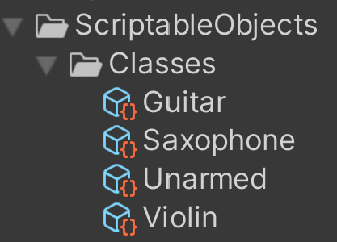

Rock The House
Spring 2022-Winter 2022
Quickstart
Rock The House was one of my favorite projects that I've worked on as a student. It allowed me to delve into many different facets of Unity: input preservation, ScriptableObjects, custom UI solutions, and even more systems that made the game what it became. I'm very proud of the work I did on this project and am beyond excited to show it off below. Take a peek behind the curtain of this fast-paced, rockin' game into it's core systems and functionlity below. Read ahead!

It began as an idea...
During Spring 2022, I was placed on a team of four to create a prototype for a game that would compete to be chosen for full-development in Fall 2022. For the game to be greenlit, we had to create a solid prototype of the overall idea and back it up with documents and a pitch detailing our future efforts for the project. It was a daunting task, especially considering I was the sole programmer of a small team with aspirations for big things. Notably, we wanted to make a local-multiplayer party game where players would compete using magical instruments. Crazy, right? We were initially inspired by the chaotic but controlled magic system of Magicka, but with a stronger focus on guitars rather than wands.
The initial prototype went far smoother than we could've ever hoped. I made a few key decisions early on in development. For example, player movement would be driven by Unity's NavMesh system rather than physics or a CharacterController. This allowed us to have tight controls and constraints on where the player was able to go within the level. A byproduct of using NavMesh was I could also implement a point and click style of movement similar to League of Legends in a similar orthographic setting. To get local co-op working, I used Unity's Player Input Manager component and the New Input System to allow for easy controller support. As it was a prototype, I focused heavily on key functionality which helped keep scope creep in check.
We pitched our game, eventually titled Rock The House, to a panel of professors, alumni, and industry guests. Over the summer, we learned that our game was one of five chosen to continue. Not only did this mean having time to create the rest of the game, but it also meant four additonal members to the team. This blog will walk through the evolution of my systems from that original prototype to the final product and everything I learned along the way. Watch a video (and see my trailer-making ability) of the initial pitch trailer here.
From Guitars to Violins
With two new programmer's joining the team, it allowed me to really delve into the systems that I had already laid the groundwork for. First up: instrument switching.
In the game, there are four distinct states: unarmed, guitar, saxophone, and violin. As you can see on the right, I created four distinct Scriptable Objects to denote these states that hold their specific values and prefabs. Originally, we designed the game under the idea that these states would be inherent classes that players would choose at the start of a match. Every class would mean not only a specific visual instrument, but also a different base and special attack for each option. However, entering development in the Fall, we iterated on our design to instead have instruments become pickups. If a player "died", they would lose their instrument and enter the vulerable unarmed state. This meant that players would need to be able to change their held instrument, scripts, and animator on the fly frequently throughout the game. Luckily, I had already accounted for this in the Spring.

Every player has a Musician script. This component has multiple common uses (it's quite a behemoth), but an important factor is allowing players to save their current instrument state and switch it on the fly. Every instrument GameObject is saved as a child under the Player parent, meaning toggling them is a matter of turning on and off children (rather than constant instantiation). Every time a player picks up an instrument drop, a few key things happen:
- A mClasses enum (Unarmed, Guitar, Saxophone, Violin) is set to the new value in Musician
- Musician queries a helper function in the GameManager to grab the corresponding Scriptable Object
- The Scriptable Object supplies new values such as speed and the new animator pertaining to the selected instrument
- References are updated to accept the new instrument and animator
- Lastly, instrument-specific functions can be called to trigger certain particle or audio effects
This method of instrument switching proved to be effective for a few reasons. First, having the instruments be children of the player rig allowed for easy enabling/disabling and animator swapping. Second, having each instrument be children of an overall Instrument class meant that Musician could refer to an abstract reference. Some sections of this process can be seen below:

As I mentioned above, Musician keeps reference to a parent Instrument class. A perk of this is allowing Musician to call abstract functions, such as instrument-wide functions like triggering attacks. With Musician being closesly tied to the Player Input component, it accepts the input and passes it along to the Instrument reference it holds, where the individual instruments override virtual functions for specific use. This flow can be seen below:
The Musician to specific instrument pipeline is very important to the game loop. Instrument switching was a big success completed in early Fall 2022 that set the stage for the rest of development. The initial prototype was built mainly for guitars, so adding in the other instruments was music to our ears. The two images below show the conversion from guitars only to multiple instruments.
Making performing fun
There's another layer to the gameplay of Rock The House: performing. Players are able to grab instruments and fight with them, but what's the end goal? The center of the map holds a stage which is the key destination for those looking to win. If a player has an instrument, they can take the stage (only one at a time) and perform for the audience, gaining points as they do. Players are immobile and defenseless while performing, making it a risk vs. reward scenario: should you take the stage and play for as long as possible before players come to stop you, or do you try to stop others from doing so?
In the initial prototype, performing was as simple as taking the stage and holding a certain button. While it had the fun factor of determining how long to perform before you were in danger, it was lacking a certain...something. Performing was the key to winning our game and the act of doing so felt stale, devoid of the intensity that the moment was supposed to bring. We noticed as a team during playtesting that some players were naturally mashing the button rather than holding it. We were confused why at first, but it made sense: performing was this intense, fast-paced action and mashing seemed to personify the feeling that we wanted to give players. To create this new mashing system, I decided on a pool vs. banking system. Every mash would contribute to a bar that filled the player's UI. These are temporary points, not yet fully added to the player's score. Once the bar reaches a certain amount, the points leave the pool and are locked into the bank. This encourages that rush of deciding whether to keep mashing to bank their points, or hold off to remain safe.
The mashing system needed a few other factors. To detect whether a player was still mashing, I implemented a counter that checks if the last mash was detected in a certain amount of buffer time. If not, the player leaves the mashing state and the stage is open for anyone to take. Also, a mashing cap was an important addition. We were quite surprised when one of our playtesters had an auto-mashing controller that was able to win games in less than ten seconds.
As can be seen above, a currMashBuffer variable handles the detection of when a player has stopped mashing. Every new mash input resets the buffer to a variable time as Time.deltaTime continuously takes away from it. The mash cap works similarly: if a certain amount of mashes is detected in the time of a second, no more mashes are allowed until the next second passes. Mashing proved to be an engaging and exciting aspect of the gameplay loop that made every win feel as if the player had truly played their heart out. The difference between the initial performing and final performing can be seen below.